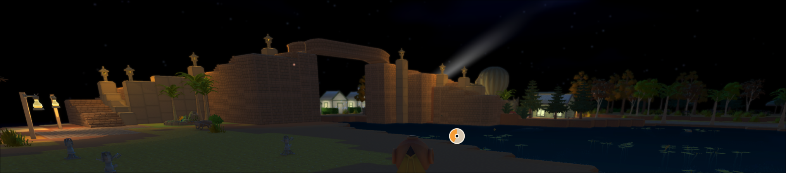

I been playing a new game here and there for the past month
called Dinkum and here is what I've been working on.
Dinkum is similar to Stardew Valley, a cozy farming game.
But Dinkum's setting is Australia and has broader focus then just farming.
For the first week or so I spent my time mainly just playing
the game and trying to unlock everything I possibly could.
But then I started working on building a bridge and decorating
my world! Here's some pictures of the bridge I was working on.
First Iteration of the Bridge
Final Iteration of the Bridge